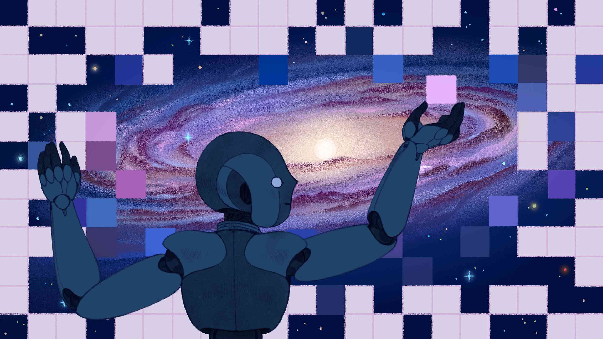
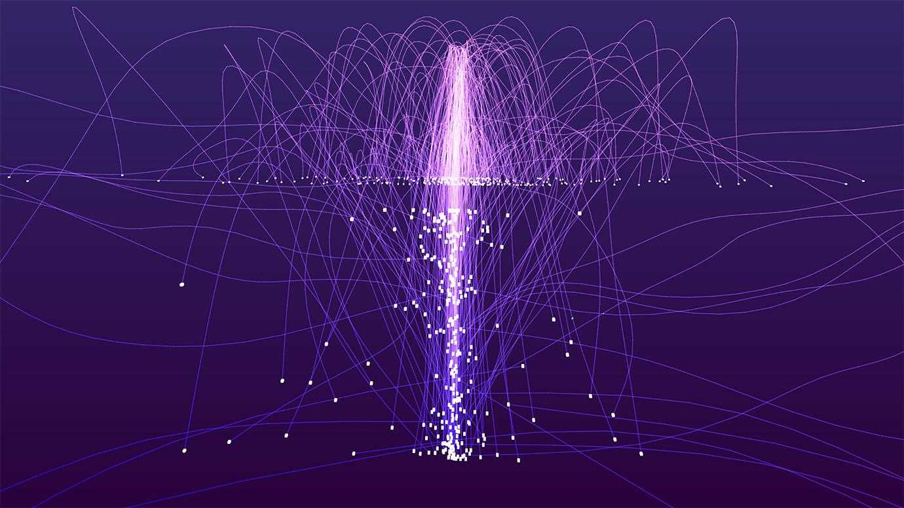

The Founding and Early Years
In 2010, Dr. Isabella Vega founded Quantum Innovations, uniting brilliant minds in quantum physics and
AI. Their flagship project, Quantum Nexus, blends quantum computing and artificial superintelligence.
Isabella's visionary leadership transformed the company's state-of-the-art headquarters into an
innovation hub. Quantum Innovations symbolizes a journey into uncharted territories, where science and
imagination converge to redefine human potential.
The Symbol of innovation
At the heart of Quantum Innovations lies the Quantum Nexus, a groundbreaking fusion of quantum computing
and artificial superintelligence. This iconic project, spearheaded by visionary founder Dr. Isabella
Vega, symbolizes a paradigm shift in the realm of scientific exploration, where the unimaginable becomes
achievable, and the boundaries of what's possible are redefined. In the world of Quantum Innovations,
the Quantum Nexus stands as an iconic beacon, illuminating a path towards a future where the uncharted
territories of science unlock unprecedented potentials for humanity.

Breaking the limits of Technology
Quantum Innovations has consistently pushed the limits of technology, achieving milestones that redefine
the boundaries of what is technologically possible:
1.Quantum Computing Prowess: Quantum Innovations stands at the forefront of quantum
computing, surpassing
traditional limitations by harnessing the power of quantum states to process information at
unprecedented speeds.
2.AetherAI Advancements: The development and integration of AetherAI, an artificial
superintelligence,
marks a groundbreaking achievement, enabling Quantum Innovations to tackle complex problems with
unparalleled computational efficiency.

Triumph over Ups and Downs
Quantum Innovations has achieved resounding success by navigating challenges with resilience and
adaptability. The company's triumph over ups and downs is attributed to strategic decision-making, a
cohesive team culture, and a commitment to continuous learning. Quantum Innovations embraces setbacks as
opportunities for growth, fostering innovation through adversity. The company's global impact extends
beyond its own successes, contributing to the advancement of technology on a broader scale. In essence,
Quantum Innovations' ability to maintain its visionary goals, overcome obstacles, and inspire resilience
underscores its position as a pioneering force in the ever-evolving landscape of scientific exploration.
The Motto
"Unveiling Tomorrow, Today: Quantum Innovations — Where Curiosity Meets Creation."